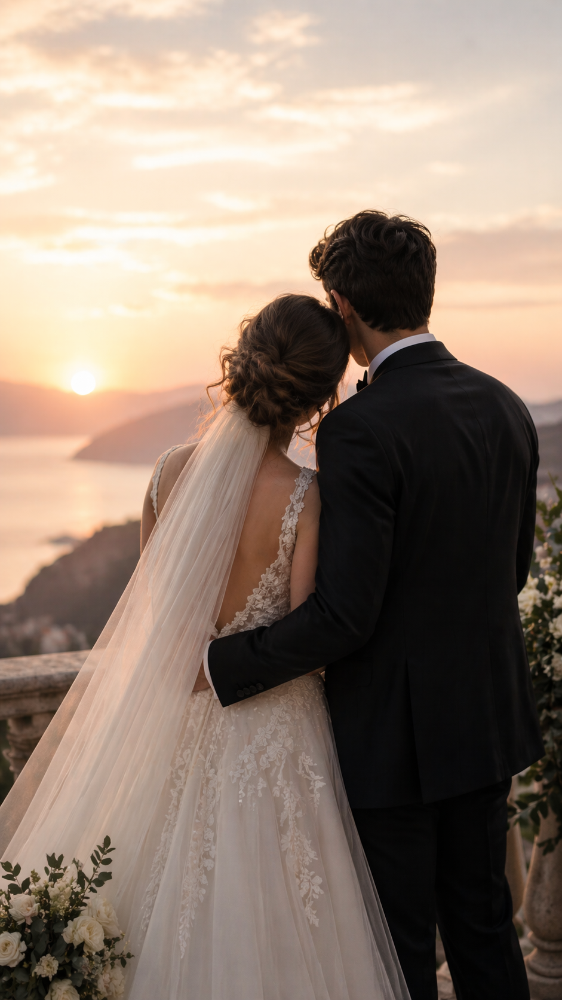

Arribada
Recepció dels convidats i primers moments de calma abans que comenci el sarau.
Ens casem!
28 i 29 de maig de 2027

Primer dia
El divendres 28 de maig es durà a terme la cerimònia, amb la família i els amics més propers. L'hora d'arribada serà a primera hora de la tarda així tothom podrà dinar a casa amb tranquil·litat. Després de la cerimònia sopar i festeta fins a l'hora que puguem allargar.
Recepció dels convidats i primers moments de calma abans que comenci el sarau.
Moment oficial, bonic i amb probabilitat elevada de mocadors estratègics.
Una estoneta per a assimilar la cerimònia i retocar-se el maquillatge. Amb menjar!
Menjar, brindis i converses que començaran normals i acabaran sent llegendàries.
Música, celebració i dignitat personal en clara tendència descendent.
Desplaça horitzontalment per veure tot el planning
Segon dia
El dissabte 29 de maig continuarà la celebració! Tindrem tot el matí per fer una mica de piscineo i vermuteo; i per la tarda tenim reservats uns quants concerts en directe per a tothom. Per la nit, com no podria faltar, acabarem amb música i ballaruques fins que el cos aguanti!
Una estona de relax, remull i sol per començar el dia com toca.
Taula llarga, gana acumulada i converses que s'allargaran sense pressa.
Per la tarda, música en directe per anar escalfant l'ambient com cal.
Recarregarem energies abans d'entrar de ple al tram final de la jornada.
Música, ballaruques i resistència física posada a prova fins ben entrada la nit.
Desplaça horitzontalment per veure tot el planning
Detalls pràctics
La celebració serà a la Casa de Colònies Can Maiol, a Sant Andreu Salou, Girona.
Hi haurà places limitades per dormir al mateix espai. L’allotjament s’haurà de gestionar directament amb els nuvis.
Més endavant compartirem més informació segons disponibilitat.
Confirmació
Properament afegirem aquí l’enllaç al formulari per confirmar assistència i indicar informació important.
Formulari disponible aviat